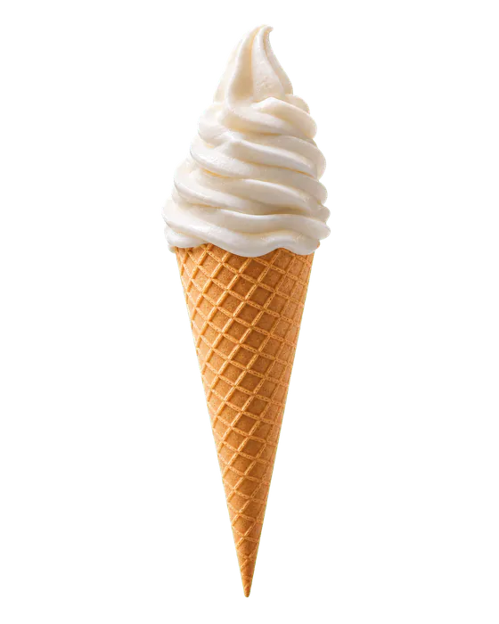
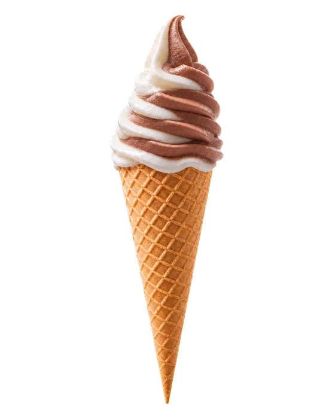
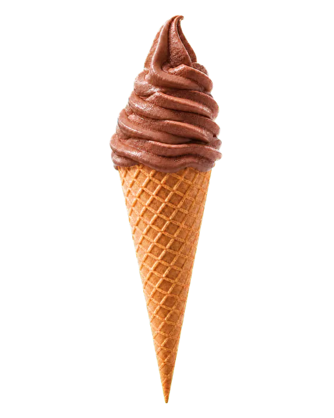
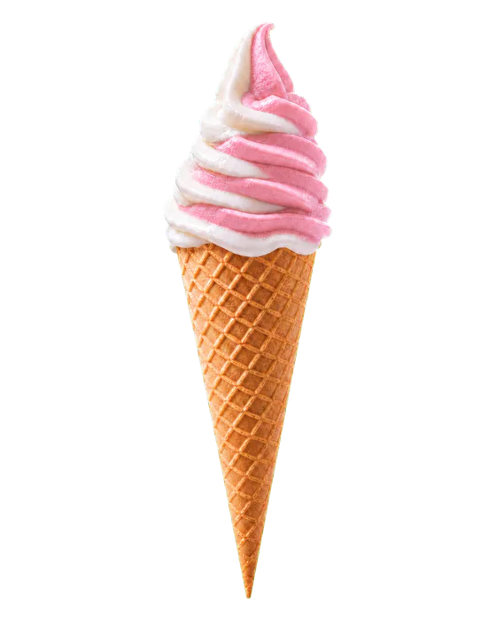
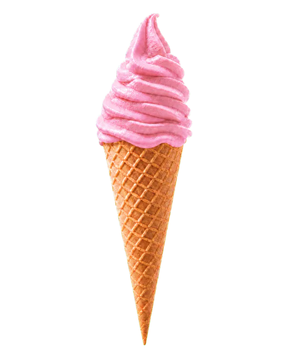

“That ice-cream was awesome.”
Akullore në Bar Martiri, Spille
Akullore e freskët pranë detit.
Vanilje e freskët, e servirur në kaush krokant për një pushim të ëmbël gjatë ditëve të verës në Spille.
Shërbehet e freskët
Kaush krokant
Pesë akullore
Zgjidh shijen tënde.
Vazhdo poshtë për të parë të pesë shijet.





Bar në Spille
Vera nis tek Bar Martiri.
Bar Martiri në Spille, Shqipëri, është ndalesa pranë plazhit për shezlone, akullore, kafe dhe pije të freskëta. Parkimi falas dhe aksesi i thjeshtë e bëjnë ditën në det më të lehtë.
-
01
Shezlone pranë detit
Rezervo vendin tënd për një ditë pushimi në Spille.
-
02
Parkim falas
Parkim pa pagesë për klientët e Bar Martiri.
-
03
Shije verore
Akullore, kafe dhe pije të freskëta pranë plazhit.
Spille Sot
Po marrim kushtet e fundit.
Moti: MET NorwayPranë detit
Ndal për shijen.
Qëndro për pamjen.
Bar Martiri
Rruga e Pishave, Spille
AL 2510, Shqipëri
- Orari
- Çdo ditë -
- Sezoni
- Maj–Shtator
Vlerësime në Google
3.9 / 5
Vlerësimi, i verifikuar për herë të fundit më 3 gusht 2026, bazohet në 31 vlerësime në Google.
Shiko të gjitha në Google“The service is excellent.”
Bar · Akullore · Spille
Shihemi tek
Bar Martiri.
Akullore, kafe dhe pije të freskëta, çdo ditë nga 06:00 deri në 23:00, Maj–Shtator.